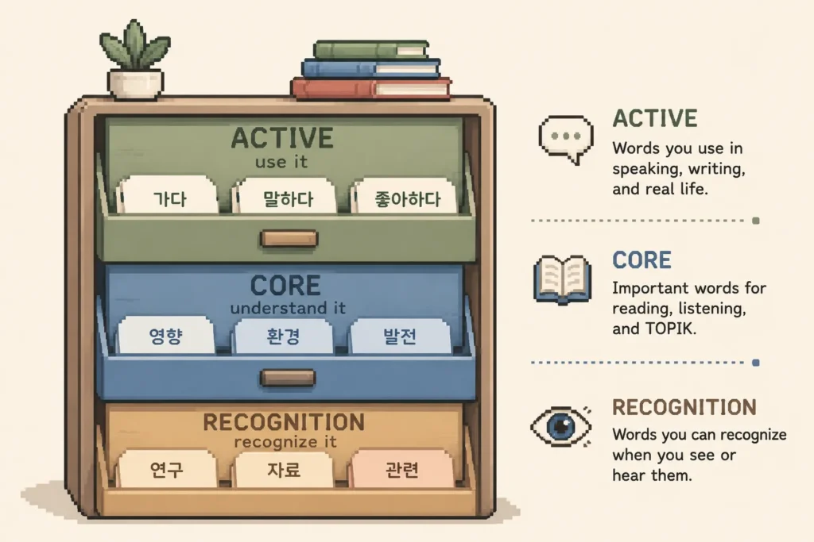
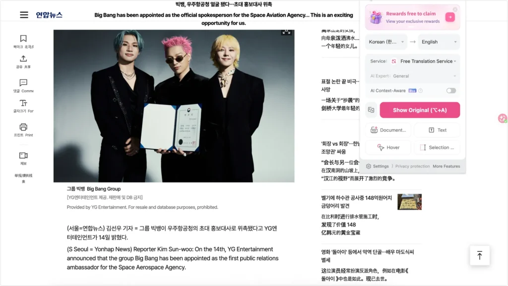
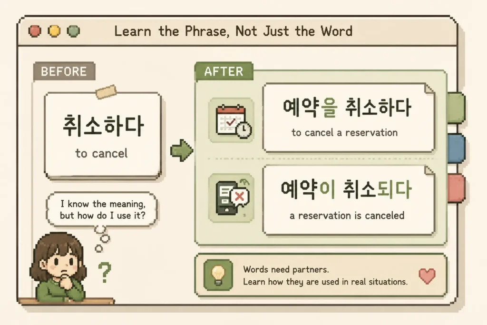
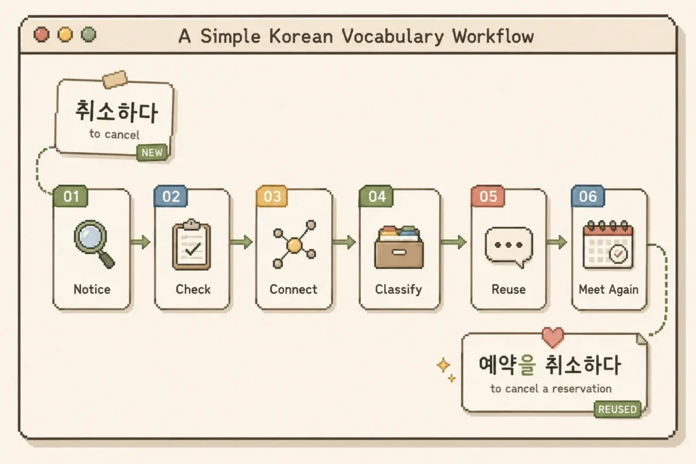

This post contains affiliate links. If you sign up through my link, I may earn a small commission at no extra cost to you. I only recommend tools I genuinely find useful for language learning.
Key Takeaways
- Learning a Korean word means more than memorizing its English translation.
- Separate words you want to use from words you only need to recognize.
- Important vocabulary should be learned with pronunciation, collocations, grammar patterns, and context.
- Not every new Korean word deserves the same amount of study time.
- A practical vocabulary cycle is: notice → check → connect → classify → reuse → meet again.
Passing TOPIK changed the way I think about Korean vocabulary.
For the exam, I spent a lot of time deliberately building vocabulary. That helped with reading, writing, and understanding more complex Korean, but I also noticed something important: words I had memorized for a test did not automatically become words I could use in conversation.
Meanwhile, some much simpler expressions became almost automatic because I kept meeting and using them in messages, conversations, dramas, news, and everyday Korean.
That changed how I think about how to learn Korean vocabulary.
I no longer treat every new word as something that needs to be memorized at the same depth. Some words need to become active. Some need to support reading and TOPIK. Others only need to become familiar enough that I recognize them the next time they appear.
The goal is not to build the longest vocabulary list.
It is to make more of the Korean you already know available when you actually need it.
🧠 Why You Know a Korean Word but Still Can’t Use It
One of the most frustrating parts of learning Korean is recognizing a word immediately on the page but being unable to produce it yourself.
You see the word and think, I know this.
Then you try to express the same idea five minutes later, and the word disappears.
That usually does not mean you have completely forgotten it. The problem is often how the word was learned.
1. I Know the Meaning, but Not How the Word Behaves
A Korean-English pair gives you only part of the information you need.
Take:
반영하다 — to reflect / incorporate
If that is all you memorize, you know the basic meaning. But you still need to know how the word behaves inside a sentence.
For example:
의견을 반영하다
to incorporate an opinion
의견이 결과에 반영되다
an opinion is reflected in the result
The meaning is closely related, but the Korean sentence works differently.
This is why I do not consider a word fully learned just because I can translate it. For important vocabulary, I also want to know what normally appears with it, which particles it uses, whether there is a related 하다 or 되다 form, and what a natural sentence looks like.
2. I Recognize the Word, but I Cannot Retrieve It
Recognition is easier than retrieval.
You may instantly understand a word when you see it in an article, but that does not mean it will appear when you need to speak or write.
This is the difference between recognition vocabulary and active vocabulary.
If I want a word to become active, I need to retrieve it myself. That means using it in a message, diary entry, conversation, sentence, or spoken response instead of only seeing it again on a flashcard.
3. I Learned the Word Without Its Usual Partners
Words rarely live alone.
A noun tends to appear with certain verbs. A verb tends to appear in particular sentence patterns. Some expressions become much easier to use once you learn the words that naturally surround them.
Instead of saving only:
영향 — influence / effect
I would rather learn:
영향을 미치다
to have an effect on
영향을 받다
to be affected by
The noun itself is easy to recognize. The useful part is knowing which verb naturally goes with it and what kind of relationship the expression creates.
A Korean word becomes easier to use when you know what normally appears around it.
4. I Learned Every New Word at the Same Depth
This was one of the biggest changes in my own vocabulary study.
I used to feel that if I encountered a new word, I should somehow “learn” it. But recognizing a word while reading, remembering it for TOPIK, and being able to use it naturally in conversation are three different goals.
A formal term from a news report does not necessarily deserve the same amount of study time as an expression I want to use every week.
Trying to learn everything deeply creates a huge workload without necessarily improving the Korean you can actually use.
5. I Memorized the Word Without a Situation
Context gives a word somewhere to live.
A word learned while discussing work, reading an interview, arguing a point, making plans, or describing a problem already has a situation attached to it.
Later, when a similar situation appears, you are not trying to retrieve an isolated translation from a vocabulary list. You are retrieving language that belongs to that situation.
This is one reason vocabulary from real conversations often feels easier to remember than vocabulary from an arbitrary list.
📚 Build Your Korean Vocabulary in Three Layers

I find it more useful to think of Korean vocabulary as three overlapping layers.
A word can move from one layer to another over time. The point is simply to decide how much effort a word deserves.
| Vocabulary Layer | What It Means | How Deeply I Learn It |
|---|---|---|
| Active Vocabulary | Words I want to say or write myself | Deep |
| Core Vocabulary | Words I need for TOPIK, reading, study, and complex content | Medium to deep |
| Recognition Vocabulary | Words I mainly need to understand when I meet them | Light |
1. Active Vocabulary
These are words and expressions I genuinely want to use myself.
They often come from conversations, messages, diary writing, situations I encounter repeatedly, or expressions I keep wishing I knew how to say.
I study these words more deeply. I care about pronunciation, collocations, particles, sentence patterns, register, and how the expression sounds in a real situation.
Most importantly, I try to use them repeatedly.
The goal is not:
I remember what this means.
The goal is:
I can reach for this naturally when I need it.
2. Core Vocabulary
This is the vocabulary that gives me access to more Korean.
It includes words needed for textbooks, TOPIK, reading, writing, news, interviews, and more complex topics.
Examples might include expressions such as:
기준을 충족하다
to meet a standard
입장을 밝히다
to state a position
문제를 제기하다
to raise an issue
These may not appear in every casual conversation, but they become increasingly useful once you move into TOPIK, news, interviews, formal writing, or more abstract topics.
TOPIK vocabulary fits naturally into this layer because the exam gives you a defined body of vocabulary instead of an endless stream of random words.
A structured textbook can do the same thing. If you are still looking for a main study resource, I compared the best Korean learning books for self-study and what kind of learner each one suits.
3. Recognition Vocabulary
This is the largest and loosest layer.
These are words I meet while watching Korean videos, listening to podcasts, reading articles, following the news, or watching dramas.
I do not force myself to memorize all of them.
Sometimes I check the meaning, understand the sentence, and move on. If I meet the same word again, it becomes a little more familiar. If it keeps appearing, I may eventually move it into my Core or Active layer.
The mistake is trying to turn every new Korean word into active vocabulary.
🔄 How to Learn Korean Vocabulary in Context
Once I know what kind of word I am dealing with, the actual learning process becomes much simpler.
Step 1. Notice the Word in Real Korean
I like vocabulary that comes with a reason to remember it.
Maybe I heard it in a drama. Maybe someone used it in a message. Maybe the same expression appeared several times in an interview. I also pick up a lot of vocabulary while reading Korean news sites such as KBS News, MBC News, and Yonhap News.
When I read a Korean article, I sometimes use Immersive Translate to compare the original Korean with an English translation without leaving the page.

I do not save every unfamiliar word I click on. I pay more attention to words that keep appearing, seem useful across different topics, or help me understand the sentence structure around them.
That is why vocabulary from real content tends to stick better. The word already comes with a topic, a sentence, and a reason you needed to understand it.
Vocabulary lists still have a place, especially for Core vocabulary and TOPIK study. I just would not let a list become my only source of Korean words.
Step 2. Check More Than the Translation
For a word that seems worth keeping, I check what I actually need to know.
That might include:
- pronunciation
- part of speech
- particles
- common collocations
- related 하다 / 되다 forms
- one natural example sentence
- whether the expression is formal, neutral, or conversational
You do not need to investigate every category for every word.
The depth should match the importance of the word.
Step 3. Save the Phrase or Sentence, Not Just the Word

Instead of saving:
부담 — burden / pressure
I would rather save:
부담을 느끼다
to feel pressure
부담이 되다
to become a burden / feel burdensome
The extra context tells me how the word enters a sentence.
This is especially useful with abstract nouns. Knowing an English translation like “pressure” is not enough if you do not know which verb normally appears with it.
Step 4. Decide Which Layer the Word Belongs To
Before spending ten minutes making a perfect vocabulary note, I ask one question:
Do I actually want to use this word myself?
If yes, it belongs in Active vocabulary.
If it is important for TOPIK, reading, or general comprehension, it may belong in Core vocabulary.
If I only encountered it once and do not expect to use it, recognition may be enough.
This one decision prevents vocabulary study from becoming endless.
Step 5. Reuse Important Words Quickly
If I want a word to become active, I try not to wait two weeks before using it.
Write one sentence. Put it into a diary entry. Send a message. Use it in an AI conversation. Say something about your own life.
The sentence does not have to be clever.
The point is to make your brain retrieve the Korean instead of recognizing it again.
Step 6. Let Real Korean Review It for You
Eventually, I want to stop treating a word as an item on a vocabulary list.
I want to meet it again naturally.
Maybe it appears in another drama. Maybe I hear it on YouTube. I keep a separate list of Korean YouTube channels that make this kind of real-world exposure easier, from learner-friendly videos to native content.
The second or third encounter is often more memorable than the first.
You start noticing:
Oh, this word again.
Then:
It appears with this verb a lot.
Eventually:
I didn’t even have to translate that.
This is what I mean by letting vocabulary return to context.
🧩 Use Korean Word Formation to Reduce Memorization
Korean vocabulary becomes easier once you stop treating every word as an unrelated object.
Patterns begin to appear.
Sino-Korean Vocabulary
Many Korean words contain recurring Sino-Korean roots.
Once you begin recognizing those elements, unfamiliar vocabulary becomes easier to analyze. Instead of memorizing every word as an entirely new shape, you start seeing relationships between words.
This does not mean you can automatically guess every Sino-Korean word correctly.
But familiar roots give you another memory connection and become particularly useful as you move into news, formal writing, academic topics, and TOPIK vocabulary.
Learn 하다 and 되다 as Part of the Pattern
Another useful habit is noticing related 하다 and 되다 forms.
For example:
반영하다
to reflect / incorporate something
반영되다
to be reflected / incorporated
Compare:
사용자 의견을 업데이트에 반영했다.
The user feedback was incorporated into the update.
사용자 의견이 업데이트에 반영되었다.
The user feedback was reflected in the update.
Rather than treating these as completely unrelated vocabulary items, pay attention to what happens to the sentence around them.
You are learning grammar and vocabulary at the same time.
Look for Repeated Word Patterns
The same idea applies to nouns.
Once 입장 becomes familiar, you may start noticing it in combinations such as:
입장을 밝히다
to state a position
입장을 유지하다
to maintain a position
입장이 바뀌다
one’s position changes
The more patterns you recognize, the less Korean vocabulary feels like memorizing thousands of unrelated items.
🗂️ When Flashcards Help — and When They Don’t
I use flashcards as a tool, not as the definition of vocabulary learning.
They are useful when I need repeated retrieval, especially for Core vocabulary, TOPIK words, words I repeatedly forget, and Active vocabulary I want to retrieve faster.
But flashcards become much less useful when I save everything.
If every unknown word from every drama, podcast, and article becomes a card, the deck grows much faster than the vocabulary becomes useful.
Translation-only cards also have limits.
A card that says:
반영하다 → to reflect
tests one piece of information.
A stronger card might contain:
의견을 반영하다
or:
사용자 의견이 결과에 반영되었다.
The same applies to abstract nouns.
Instead of:
영향 → influence
a stronger card might contain:
경제에 영향을 미치다
or:
환경의 영향을 받다
The question is not:
Should I use flashcards?
It is:
Which words are important enough to deserve repeated flashcard review, and what context should stay attached to them?
How I Review the Three Types of Vocabulary
The three layers should not be reviewed in the same way.
| Vocabulary Type | Review Depth | Best Method |
|---|---|---|
| Active | Deep | Speaking, writing, retrieval, repeated use |
| Core | Medium | Flashcards, textbooks, TOPIK practice, reading |
| Recognition | Light | Repeated exposure through real Korean |
Active vocabulary deserves the most effort because you expect yourself to produce it.
Core vocabulary needs reliable recognition and understanding.
Recognition vocabulary can remain much lighter until repeated encounters show that the word deserves more attention.
This makes vocabulary study much more manageable.
🎬 Learn Korean Vocabulary From Real Content
One of the best things about real Korean content is that it shows vocabulary doing something.
A word in a dictionary has a definition.
A word inside a conversation also has a speaker, relationship, tone, situation, surrounding grammar, and natural collocations.
That extra information matters.
Korean dramas are particularly useful for this because the same everyday vocabulary appears across different relationships and registers. If you use dramas as part of your study, I compared 20 K-dramas for learning Korean by difficulty and learning value.
I would not pause every 15 seconds to save another word, though.
If an episode gives me three useful expressions that I can genuinely imagine using, that can be enough.
The goal is to watch Korean and notice useful language, not turn every episode into a vocabulary-mining project.
A Tool I Use for Vocabulary From Korean Shows
One problem with learning vocabulary from dramas is that the workflow can become annoying very quickly.
You pause the video, switch to a dictionary, search the word, return to the scene, copy the sentence somewhere else, and then try to remember where it came from later.
Lingopie makes that process easier because the vocabulary stays connected to the content you were watching.
You can watch with Korean and English subtitles, click unfamiliar words while you watch, and save useful vocabulary for later review. What matters to me is not simply that it creates another word list. The useful part is that the word begins with an actual scene and sentence attached to it.
That fits the way I prefer to learn Active vocabulary:
see it in context → understand it → save what matters → meet it again


I still would not save every unfamiliar Korean word. I would apply the same three-layer rule: keep expressions I genuinely want to use or repeatedly need, and let less important words remain recognition vocabulary.
A Simple Korean Vocabulary Workflow

My vocabulary process can be reduced to six steps:
| Step | What to Do |
|---|---|
| Notice | Meet a useful word in real Korean or structured study |
| Check | Understand its meaning, pronunciation, and basic grammar |
| Connect | Save a collocation, phrase, or sentence |
| Classify | Decide whether it is Active, Core, or Recognition vocabulary |
| Reuse | Retrieve important words through speaking or writing |
| Meet Again | Let future Korean reinforce the word naturally |
The classification step is what keeps the system manageable.
Without it, every new word creates more work.
With it, I know where to spend my attention.
What I Would Stop Doing
Saving Every Unknown Word
Unknown does not automatically mean important.
If I can understand the content without the word and do not expect to need it again, I am comfortable moving on.
Memorizing Only Korean-English Pairs
Translation is useful for establishing meaning.
But for important vocabulary, it should be the beginning rather than the entire note.
I want enough context to know how the Korean behaves.
Spending Equal Time on Every Word
A word I want to use tomorrow deserves more attention than a rare term I may never see again.
Vocabulary study becomes easier when effort follows usefulness.
Building Huge Decks I Never Use
A flashcard deck is not proof that vocabulary has been learned.
If the deck grows every day while none of the vocabulary appears in your own Korean, the system may be collecting more than it is teaching.
What Progress Should Feel Like
Vocabulary progress is not only knowing a larger number of words.
A word you used to translate into English starts producing meaning directly.
A verb begins to come to mind with the right noun.
You start predicting which expression will appear next in a familiar situation.
A phrase you first heard in a drama unexpectedly appears in your own message.
You recognize a familiar root inside a new word and can make a reasonable guess before checking the dictionary.
And words that once required deliberate recall begin to appear without much effort.
That is the point where vocabulary starts feeling less like a list and more like Korean.
FAQ
What is the best way to learn Korean vocabulary?
Learn important Korean words with context rather than translation alone. Check how the word behaves, save a useful phrase or sentence, and actively retrieve words you want to use. Less important vocabulary can remain at recognition level until you meet it repeatedly.
How many Korean words should I learn per day?
There is no single useful number for every learner.
Ten words you want to actively use require much more work than ten words you only need to recognize. Instead of focusing only on daily totals, decide how deeply each word needs to be learned.
Should I memorize Korean vocabulary lists?
Vocabulary lists can be useful for building Core vocabulary, especially for beginners and TOPIK preparation.
I would not use them as my only source of vocabulary. Real Korean provides the context, collocations, register, and repeated exposure that lists often cannot.
Are flashcards good for Korean vocabulary?
Yes, especially for Core vocabulary, TOPIK words, and important vocabulary that needs repeated retrieval.
They work better when the card includes a useful phrase or sentence rather than only a Korean-English translation pair.
How can I remember Korean vocabulary for longer?
Meet important vocabulary in several ways.
Hear it, read it, connect it to a phrase, retrieve it yourself, and then notice it again in real Korean. Repeated encounters in different contexts help a word become easier to recognize and eventually easier to use.
Final Thoughts
Learning more Korean vocabulary does not mean giving every new word the same treatment.
Some words deserve deep attention because you want to use them.
Some form the core vocabulary that helps you read, study, and prepare for TOPIK.
Others only need to become familiar enough that the next encounter is easier than the first.
That is why I prefer thinking in three layers:
want to use it → learn it deeply
need to understand it → learn it reliably
just encountered it → recognize it and move on
Over time, words can move between those layers.
The goal is not to own the biggest vocabulary list.
It is to make more of the Korean you already know available when you actually need it.